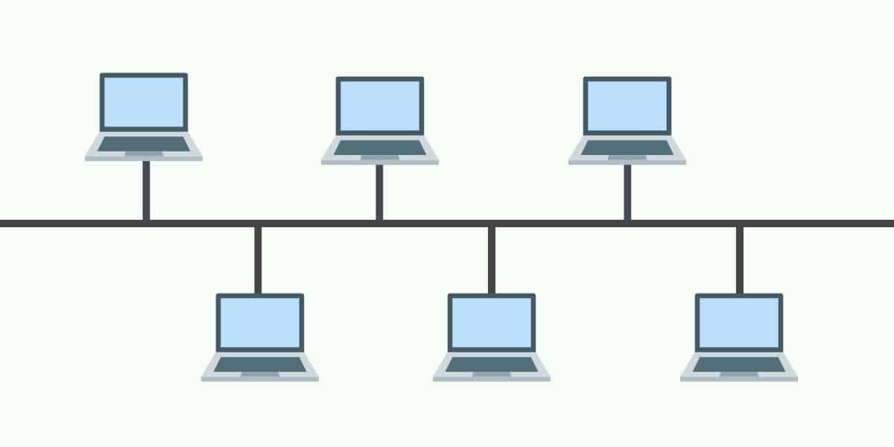

Apa Sih Topologi Bus Itu
Topologi Bus
Pengertian Topologi Bus
Topologi bus adalah suatu cara atau metode untuk dapat menghubungkan sejumlah perangkat komputer menggunakan kabel tunggal atau bus sebagai media transmisi (pusat lalu lintas data). Topologi jenis ini paling sering diterapkan untuk jaringan yang skalanya kecil dan hubungkan lewat kabel tunggal atau bus. Sesuai dengan namanya gambar topologi ini rangkaiannya menyerupai area di dalam bus. Proses transmisi data pada jaringan topologi ini menggunakan terminator dan juga perangkat keras seperti contohnya konektor T serta BNC. Kabel tunggal yang digunakannya menggunakan kabel coaxical. Fungsi topologi ini yaitu untuk menghubungkan seluruh perangkat sehingga dapat saling bertukar data dan berkomunikasi. Prinsip kerja dari topologi ini juga cukup sederhana yaitu satu perangkat untuk server serta jaringannya lalu dipecah dan akan dihubungkan ke perangkat lain dengan menggunakan bus.
Karakteristik Topologi Bus
Karakteristik dari jenis topologi jaringan ini tergolong mudah untuk dikendalikan. Hal tersebut menjadi salah satu alasan mengapa banyak perusahaan kecil yang memutuskan untuk menggunakan topologi ini.
Berikut ini merupakan beberapa karakteristik dari topologi yang perlu Anda ketahui:
- Memiliki kabel utama untuk pusat lalu lintas data
Proses instalasi jaringannya sangat sederhana dan ringan
Biaya yang dibutuhkan dalam pembangunan topologi ini cukup terjangkau
Lebih banyak memerlukan BNC serta konektor T pada setiap ethernet card jika dibandingkan dengan hub
Setiap node yang ada akan dihubungkan secara serial yang keduanya ditutupkan dengan terminator
Intersection di dalam satu paket data sering terjadi
Apabila masalah terjadi pada salah satu node maka akan membuat seluruh jaringan menjadi down
Cara Kerja Topologi Bus

Pada topologi jaringan bus seluruh perangkat jaringannya dihubungkan kabel utama sehingga bisa mengirim dan juga menerima paket data. Tetapi yang perlu digaris bawahi yaitu transfer data ini bisa terjadi jika kabel utama ada pada kondisi bebas saat proses pertukaran data sedang berlangsung. Contoh topologi jenis ini memanfaatkan protokol bernama CSMA yaitu Carrier Sense Multiple Access dan CD (Collision Detection) pada prosesnya. Hal tersebut untuk bisa memastikan proses dari pertukaran paket berjalan dengan lancar tanpa adanya gangguan seperti contohnya gangguan tabrakan data di kabel utama. Pada saat perangkat ingin mengirimkan data ke perangkat yang lainnya maka perangkat pengirim melakukan broadcast dahulu. Proses tersebut yaitu sinyal yang disebarkan di seluruh kabel jaringan. Kemudian sinyal tersebutlah yang memeriksa perangkat untuk dapat menemukan alamat tujuan. Apabila IP address dari perangkat yang diperiksa sudah sesuai dengan alamat tujuan maka perangkat yang dituju bisa menangkap sinyal. Begitu pula sebaliknya jika tidak sesuai maka sinyal akan dibuang.